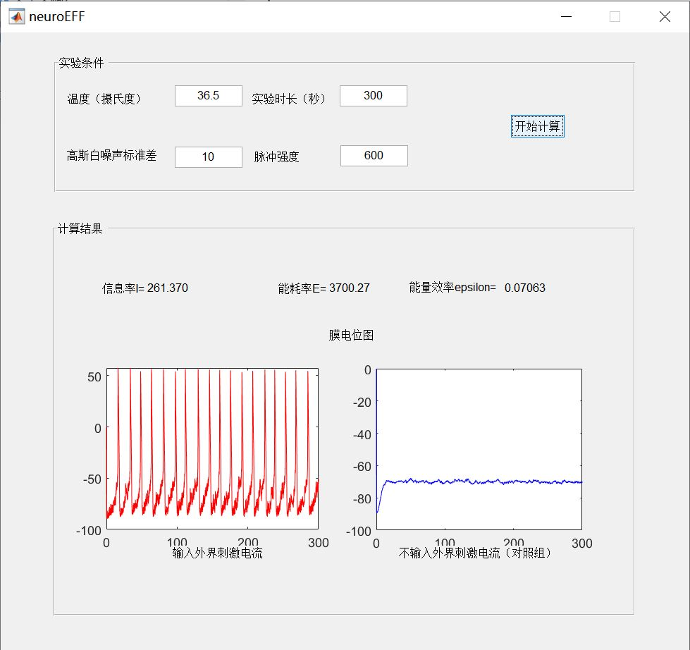
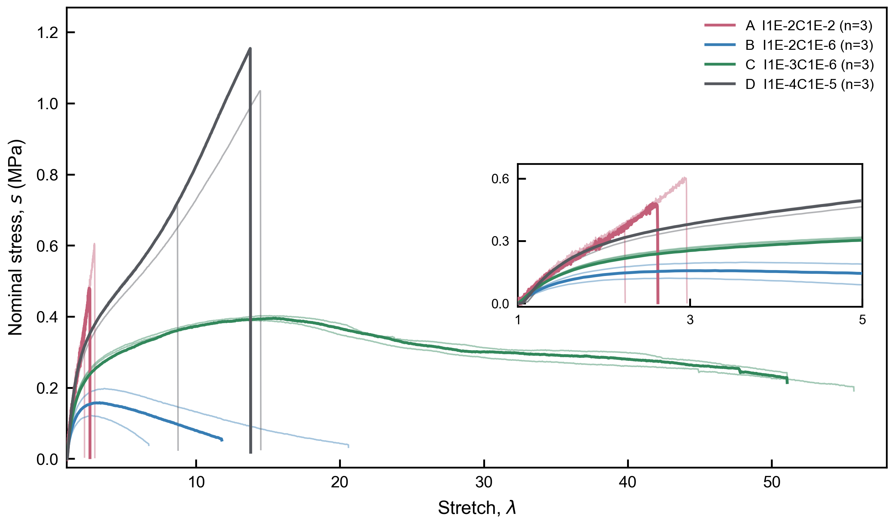

Theory, computation and experiment
Electrical Failure and Defect Tolerance
Connecting energetic theories of electrical failure with controlled defects, reproducible fabrication and measurements of material response.
Read the research storyBrain computation · Learning · NeuroAI
I want to understand how brains compute, learn and adapt—and use those insights to build better artificial intelligence.
I am a PhD candidate in Solid Mechanics at Xi’an Jiaotong University, applying to computational neuroscience and NeuroAI PhD programs for Fall 2027. My research combines mathematical modelling, numerical simulation and experiments. Earlier projects in computational neuroscience introduced me to neuronal energetics and astrocyte dynamics.
Research direction
Scientific goal
I want to explain how neural systems maintain information, learn from experience and adapt their behaviour. Models should make predictions that behavioural and neural measurements can test.
Engineering goal
I want to investigate whether specific computational principles can improve retention, adaptation or efficiency in artificial systems, evaluated under comparable training and resource budgets.
Theory, computation and experiment
Connecting energetic theories of electrical failure with controlled defects, reproducible fabrication and measurements of material response.
Read the research story
A MATLAB tool for studying how temperature, noise and stimulus intensity affect information and energy measures in a conductance-based cortical neuron model.
Read the project
Investigating how composition, preparation history and loading conditions shape the response of polymer networks.
Read the projectObservations, sketches and open questions recorded along the way.